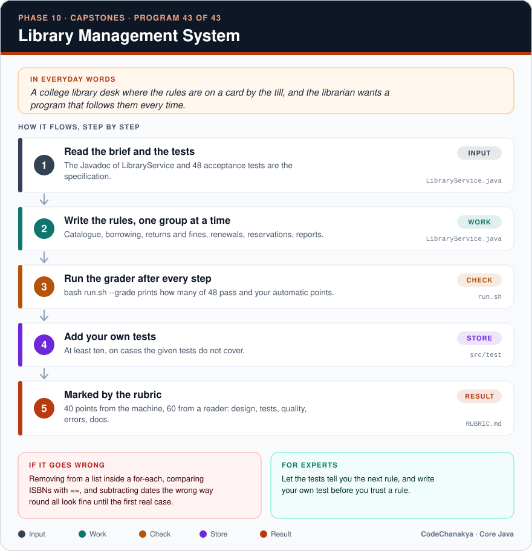

Phase 10 · Capstones · Program 43 of 43
Library Management System
The problem
This is the last program, and it is different. There is no walkthrough. You get a brief, 48 acceptance tests that describe the rules, and a project with the answer left out. You build it yourself.
A college library needs a catalogue, members, lending, fines, renewals, reservations and reports, with different rules for students and faculty. A grader script gives you 40 of 100 points from the tests. The rest come from a rubric that rewards design, your own tests, clear errors and tidy code.
See the flow
The whole program as one picture. Read it top to bottom; the colour of each card says what kind of step it is.


If you are new to coding
A college library desk where the rules are on a card by the till, and the librarian wants a program that follows them every time.
If you are learning
Follow the numbered cards from top to bottom. Open the file named on each card, run the program, and match its output to the last card.
If you are experienced
Let the tests tell you the next rule, and write your own test before you trust a rule.
Text version of the flow
- Read the brief and the tests (input): The Javadoc of LibraryService and 48 acceptance tests are the specification.
- Write the rules, one group at a time (work): Catalogue, borrowing, returns and fines, renewals, reservations, reports.
- Run the grader after every step (check): bash run.sh --grade prints how many of 48 pass and your automatic points.
- Add your own tests (store): At least ten, on cases the given tests do not cover.
- Marked by the rubric (result): 40 points from the machine, 60 from a reader: design, tests, quality, errors, docs.
Read in this order
- 1README.mdThe brief and requirements R1 to R11.
- 2LibraryService.java (starter)The file you write. The rules are in the Javadoc.
- 3BorrowingAcceptanceTest.javaRead the tests as the specification.
- 4RUBRIC.mdHow the 100 points are earned.
- 5hints/Staged hints without code. Use them last.
- 6reference/A finished answer. Open it only when you are done.
The code
package com.codechanakya.library; import java.math.BigDecimal; import java.time.Clock; import java.util.List; /** * The library's rules. THIS IS THE FILE YOU WRITE. * * <p>Every method below throws {@link UnsupportedOperationException} until you replace its body. The comment on each * method is part of the specification. The tests in {@code src/test} are the rest of it. Read them first. * * <p>General rules: * <ul> * <li>Today's date always comes from {@code clock}: {@code LocalDate.now(clock)}. Never {@code LocalDate.now()}.</li> * <li>Money is a {@link BigDecimal} with two decimal places (scale 2), everywhere it is returned.</li> * <li>Whenever a rule is broken, or something does not exist, throw a {@link LibraryException} whose message says what * is wrong in words a librarian would understand.</li> * <li>Talk to the data only through {@link LibraryStore}.</li> * </ul> */ public class LibraryService { private final LibraryStore store; private final Clock clock; public LibraryService(LibraryStore store, Clock clock) { this.store = store; this.clock = clock; } // ----- catalogue and members /** * Adds a book to the catalogue and returns it. * The ISBN, title and author are trimmed. The ISBN and the title must not be blank, there must be at least one * copy, and no other book may have the same ISBN. */ public Book addBook(String isbn, String title, String author, int copies) { throw new UnsupportedOperationException("TODO: addBook"); } /** Adds a member and returns them. The name is trimmed and must not be blank. Ids are given by the store. */ public Member join(String name, MemberType type) { throw new UnsupportedOperationException("TODO: join"); } /** The copies on the shelf: the copies the library owns, minus the loans that are still out. Unknown book: error. */ public int availableCopies(String isbn) { throw new UnsupportedOperationException("TODO: availableCopies"); } /** * Books whose title or author contains the text, ignoring upper and lower case, sorted by title (also ignoring * case), then by ISBN. Blank or null text finds nothing: return an empty list. */ public List<Book> search(String text) { throw new UnsupportedOperationException("TODO: search"); } // ----- borrowing, renewing, returning /** * Lends a copy of a book to a member. The loan is due {@code type.loanDays()} days from today. * It is refused when: * <ul> * <li>the member or the book does not exist;</li> * <li>the member already holds {@code type.maxLoans()} books;</li> * <li>the member has a loan that is overdue (due before today; a loan due today is not overdue);</li> * <li>the member owes MORE than 50.00 in fines (exactly 50.00 is allowed);</li> * <li>the member already holds a copy of this book;</li> * <li>no copy is available;</li> * <li>somebody has reserved the book and this member is not first in the queue. When the member IS first in * the queue, the borrowing succeeds and their reservation is removed.</li> * </ul> */ public Loan borrow(int memberId, String isbn) { throw new UnsupportedOperationException("TODO: borrow"); } /** * Extends a loan by 7 days and returns the changed loan. It is refused when the loan does not exist, has been * returned, has already been renewed once, is overdue (a loan due today may still be renewed), or when anybody is * waiting for the book. */ public Loan renew(int loanId) { throw new UnsupportedOperationException("TODO: renew"); } /** * Takes a book back today and returns the fine for this loan: the member's fine per day multiplied by the days * after the due date. Returned on or before the due date: 0.00. The fine is also added to what the member owes * (see {@code store.fines} and {@code store.setFines}). A loan that does not exist, or was already returned, is an error. */ public BigDecimal returnBook(int loanId) { throw new UnsupportedOperationException("TODO: returnBook"); } // ----- reservations /** * Puts the member in the queue for a book that has no copy on the shelf. It is refused when the member or the * book does not exist, when a copy IS on the shelf (they should borrow it), when the member already holds the * book, or when the member is already in the queue for it. */ public Reservation reserve(int memberId, String isbn) { throw new UnsupportedOperationException("TODO: reserve"); } // ----- fines and reports /** What the member owes in fines. Unknown member: error. */ public BigDecimal outstandingFines(int memberId) { throw new UnsupportedOperationException("TODO: outstandingFines"); } /** * Takes a payment off the member's fines and returns what is still owed. The payment must be more than zero and * no more than what is owed. */ public BigDecimal payFine(int memberId, BigDecimal amount) { throw new UnsupportedOperationException("TODO: payFine"); } /** The books the member has now (not yet returned), lowest loan id first. Unknown member: error. */ public List<Loan> loansOf(int memberId) { throw new UnsupportedOperationException("TODO: loansOf"); } /** Every loan that is overdue today, earliest due date first, then lowest loan id. */ public List<Loan> overdueLoans() { throw new UnsupportedOperationException("TODO: overdueLoans"); } }
package com.codechanakya.library; import static org.junit.jupiter.api.Assertions.assertEquals; import static org.junit.jupiter.api.Assertions.assertNull; import static org.junit.jupiter.api.Assertions.assertThrows; import java.util.List; import org.junit.jupiter.api.DisplayName; import org.junit.jupiter.api.Test; class BorrowingAcceptanceTest extends AcceptanceBase { @Test @DisplayName("a student's loan lasts 14 days") void studentDueDate() { book("A", 1); Member asha = student("Asha"); Loan loan = library.borrow(asha.id(), "A"); assertEquals(1, loan.id()); assertEquals(DAY_0, loan.borrowedOn()); assertEquals(DAY_0.plusDays(14), loan.dueOn()); assertNull(loan.returnedOn()); assertEquals(0, loan.renewals()); } @Test @DisplayName("a faculty member's loan lasts 30 days") void facultyDueDate() { book("A", 1); Member bilal = faculty("Bilal"); assertEquals(DAY_0.plusDays(30), library.borrow(bilal.id(), "A").dueOn()); } @Test @DisplayName("borrowing takes one copy off the shelf") void copiesGoDown() { book("A", 3); Member asha = student("Asha"); library.borrow(asha.id(), "A"); assertEquals(2, library.availableCopies("A")); } @Test @DisplayName("when every copy is out, nobody else can borrow") void noCopiesLeft() { book("A", 1); Member asha = student("Asha"); Member bilal = student("Bilal"); library.borrow(asha.id(), "A"); assertThrows(LibraryException.class, () -> library.borrow(bilal.id(), "A")); } @Test @DisplayName("a student may hold three books, not four") void studentLimit() { book("A", 1); book("B", 1); book("C", 1); book("D", 1); Member asha = student("Asha"); library.borrow(asha.id(), "A"); library.borrow(asha.id(), "B"); library.borrow(asha.id(), "C"); assertThrows(LibraryException.class, () -> library.borrow(asha.id(), "D")); } @Test @DisplayName("a faculty member may hold ten books, not eleven") void facultyLimit() { for (int i = 1; i <= 11; i++) { book("B" + i, 1); } Member bilal = faculty("Bilal"); for (int i = 1; i <= 10; i++) { library.borrow(bilal.id(), "B" + i); } assertThrows(LibraryException.class, () -> library.borrow(bilal.id(), "B11")); } @Test @DisplayName("a member cannot hold two copies of the same book") void sameBookTwice() { book("A", 2); Member asha = student("Asha"); library.borrow(asha.id(), "A"); assertThrows(LibraryException.class, () -> library.borrow(asha.id(), "A")); } @Test @DisplayName("an unknown member or an unknown book is an error") void unknowns() { book("A", 1); Member asha = student("Asha"); assertThrows(LibraryException.class, () -> library.borrow(99, "A")); assertThrows(LibraryException.class, () -> library.borrow(asha.id(), "nope")); } @Test @DisplayName("a member with an overdue book cannot borrow, but one whose book is due today can") void overdueBlocksBorrowing() { book("A", 1); book("B", 1); book("C", 1); Member asha = student("Asha"); library.borrow(asha.id(), "A"); passDays(14); // due today: not overdue yet library.borrow(asha.id(), "B"); passDays(1); // now A is a day overdue assertThrows(LibraryException.class, () -> library.borrow(asha.id(), "C")); } @Test @DisplayName("fines of exactly 50.00 still allow borrowing; more than 50.00 does not") void fineLimit() { book("A", 1); book("B", 1); book("C", 1); Member asha = student("Asha"); Loan first = library.borrow(asha.id(), "A"); passDays(14 + 25); // 25 days late at 2.00 a day assertEquals(money("50.00"), library.returnBook(first.id())); Loan second = library.borrow(asha.id(), "B"); // allowed: the fines are exactly 50.00 passDays(14 + 1); // one more day late assertEquals(money("2.00"), library.returnBook(second.id())); assertEquals(money("52.00"), library.outstandingFines(asha.id())); assertThrows(LibraryException.class, () -> library.borrow(asha.id(), "C")); } @Test @DisplayName("loansOf lists the books a member has now, oldest first, without returned ones") void loansOf() { book("A", 1); book("B", 1); book("C", 1); Member asha = student("Asha"); Loan a = library.borrow(asha.id(), "A"); Loan b = library.borrow(asha.id(), "B"); library.borrow(asha.id(), "C"); library.returnBook(b.id()); assertEquals(List.of("A", "C"), library.loansOf(asha.id()).stream().map(Loan::isbn).toList()); assertEquals(a.id(), library.loansOf(asha.id()).get(0).id()); } @Test @DisplayName("loansOf for an unknown member is an error") void loansOfUnknown() { assertThrows(LibraryException.class, () -> library.loansOf(5)); } }
Only the key files are shown. The rest are in the repository.
Run it
$ ./run.sh --check
== Setting up
4 books, 3 members
Search "java": [Effective Java]
Search "eric": [Design Patterns, Domain-Driven Design]
== Day 0: borrowing
Asha borrows Clean Code: loan 1, due 2025-07-14
Asha borrows Effective Java: loan 2, due 2025-07-14
Bilal borrows Design Patterns: loan 3, due 2025-07-30
Chitra borrows Effective Java (no copy left): refused, No copy of 978-0134685991 is available. It can be reserved.
Asha borrows Clean Code again: refused, Asha Rao already has a copy of 978-0132350884.
Chitra reserves Effective Java: reservation 1
Chitra reserves Clean Code (a copy is free): refused, 978-0132350884 is on the shelf. Borrow it instead of reserving it.
== Day 10: renewing
Asha renews Clean Code: loan 1, due 2025-07-21
Asha renews Clean Code again: refused, Loan 1 has already been renewed once.
Asha renews Effective Java (Chitra is waiting): refused, Someone is waiting for 978-0134685991, so it cannot be renewed.
== Day 17: Effective Java is 3 days late
Overdue: loan 2, due 2025-07-14
Asha borrows Domain-Driven Design (she has an overdue book): refused, Asha Rao has an overdue book and must return it first.
Asha returns Effective Java, fine 6.00
Asha owes 6.00
Asha borrows Effective Java (Chitra is first in the queue): refused, 978-0134685991 is held for another member who reserved it first.
Chitra borrows Effective Java: loan 4, due 2025-07-31
== Day 26: Clean Code is 5 days late, Design Patterns is 4 days early
Asha returns Clean Code, fine 10.00
Bilal returns Design Patterns, fine 0.00
Asha owes 16.00
Asha pays 4.00, still owes 12.00
Asha pays 100.00: refused, The payment of 100.00 is more than the 12.00 owed.
== Shelf at the end
Clean Code 2 of 2 on the shelf
Effective Java 0 of 1 on the shelf
Design Patterns 1 of 1 on the shelf
Domain-Driven Design 1 of 1 on the shelf
OK: output matches expected-output.txt
This is the real output from OpenJDK 21.0.13 on Linux, with the real Apache Derby 10.16.1.1 jars. The run is the same every time because the clock is fixed and the database lives in memory. The project's GitHub Actions run is the check on Java 21 and 25 with real Maven and the real JUnit jar. It has not yet been run on Windows or macOS. Run ./run.sh --test for the JUnit tests.
Your build plan
- BeginnerMake the first ten acceptance tests pass.
- IntermediateWrite ten tests of your own on cases the given ones skip.
- IntermediateKeep going until the grader says 48 of 48.
- ChallengeAdd a CSV-backed store behind LibraryStore.
- ChallengeReport the three most borrowed books.
- ChallengeGive reference books a higher fine without changing old tests.
Mark yourself with the grading sheet. The stretch goals are in the exercises folder.
Break it on purpose
Three files: removing from a list while looping over it, comparing text with ==, and subtracting dates the wrong way round. The README in the broken folder explains each one.